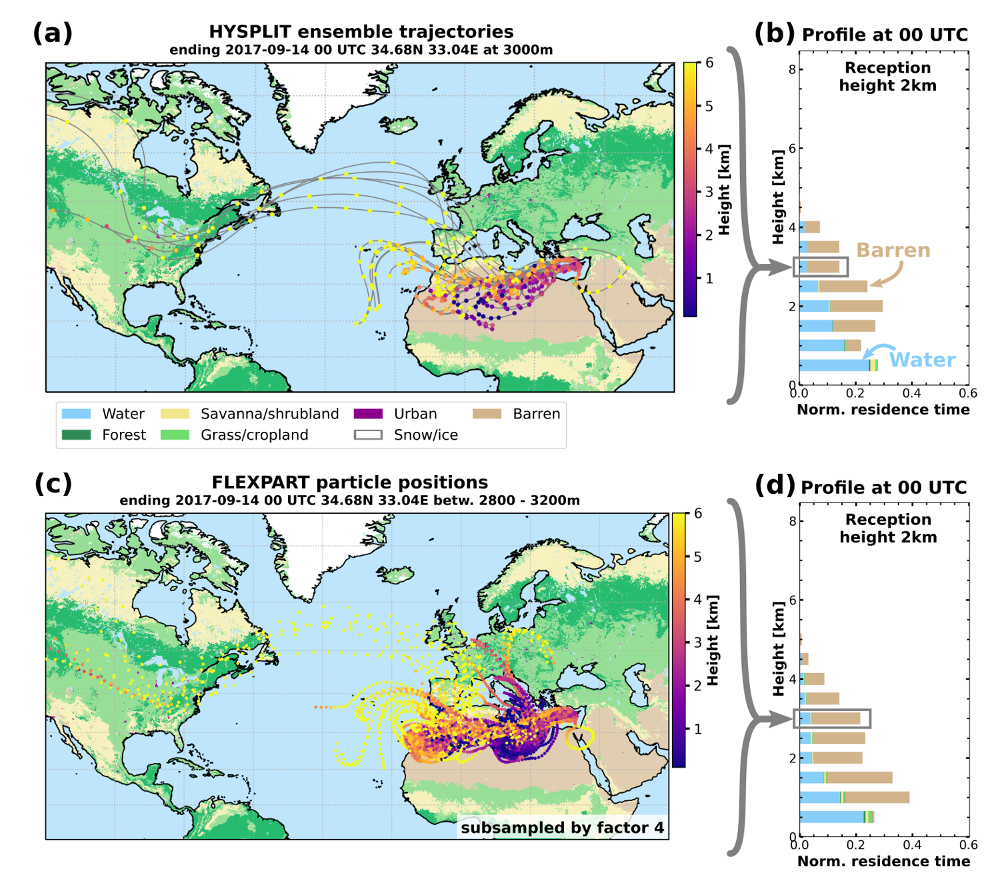
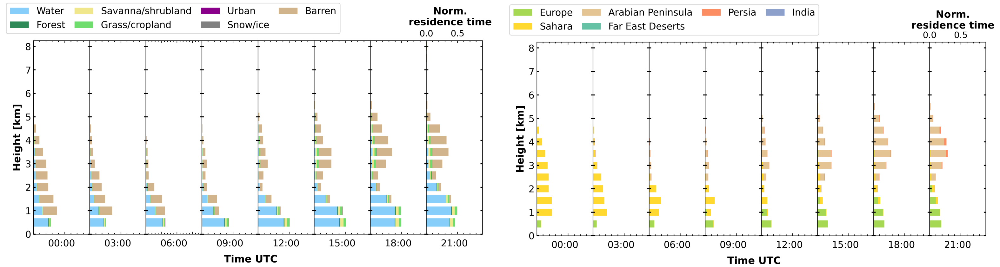
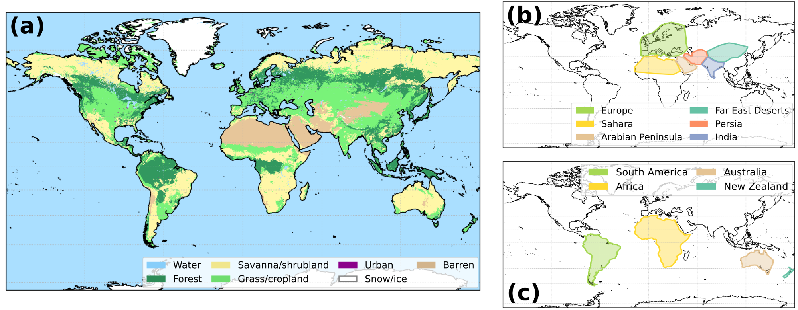

trace_airmass_source: trajectory analysis tool¶

Airmass transport simulations are combined with a land cover classification for a temporally and vertically resolved airmass source attribution. The air parcel locations can be taken form HYSPLIT ensemble trajectories (Stein et al., 2015) or particle positions from FLEXPART (PISSO et al., 2019).
Whenever a airparcel is below a defined reception height, the land cover is categorized using custom defined polygons encompassing areas of interest or a simplified version (number of categories reduced to 7) of the MODIS land cover classification (Friedl et al., 2002, Broxton et al., 2014). An airparcel is assumed to be influenced by the land surface if the trajectory is below the reception. The residence time for each category is then the total time an airparcel fulfilled this criterion by land cover category. This calculation is repeated in steps of 3h in time and 500m in height to provide a continuous estimate on the airmass source and as a first hint on potential aerosol load. From the results a time-height plot of airmass source can be generated for a certain location, which is comparable to active remote sensing time-height plots.
Comprehensive documentation is available at trace-doc and in ACP Discussion paper
Examples¶
 
Installation¶
trace_airmass_source is written in python3 and requires an extensive of additional packages. There are two options to acquire these packages.
local python installataion¶
Install all the packages listed in requirements.txt
docker container¶
Deployment may be simplified using a docker image which includes all the dependencies. This docker container also includes Flexpart 10.4.
# build the Dockerfile
docker build -t trace_env .
# run an interactive bash on this image
docker run -v `pwd`:/trace -it trace_env /bin/bash
# or to build the documentation as well
docker run -v `pwd`/..:/trace -it trace_env /bin/bash
# or to just run a command
docker exec -i CONTAINERNAME bash -c "cd trace && ..."
When using docker under windows, the pwd has to be replaced by the path to the local trace directory.
Quick-Setup¶
Please put your credentials (name, institution, contact) in the output_meta.toml file.
If FLEXPART shall be used with GFS grib data, the login credential for the GFS data from rda.ucar.edu has to be stored in server_logins.toml.
[flexpart]
login = ''
password = ''
Each station requires a config file. An example for Limassol is provided config_limassol.toml.
A subfolder named after the respective station should exisit the folders trajectories, flexpart_partposit and output.
Usage¶
Running trace consists of several steps, that are (partly) automated in the autorun.sh script.
Preparing the transport simulations¶
As input for an airmass source estimate, either HYSPLIT backward trajectories or FLEXPART particle positions are required. Simulations with FLEXPART can be done within the docker container. The HYSPLIT backward trajectories have to be calculated separately.
HYSPLIT¶
HYSPLIT backward trajectories are required, a 10-day 27-member ensemble setup is recommended. Please note that HYSPLIT itself is not provided within this package (The binary to run is hyts_ens with the respective CONTROL file).
Meteorological input data for HYSPLIT are taken from the GDAS1 dataset (https://www.ready.noaa.gov/gdas1.php) provided by the Air Resources Laboratory (ARL) of the U.S. National Weather Service’s National Centers for Environmental Prediction (NCEP).
An trajectory is calculated every 3h in steps of 500m. Conveniently the input trajectories are placed in the trajectories directory.
A list of required trajectories can be generated with:
python3 gen_hysplit_input.py --station STATIONNAME
The filename of each trajectory should be
hysplit_trajectory-[YYYYMMDD-HH]-[lat]-[lon]-[height]-[length].tdump
See the documenation for more information on configuring the HYSPLIT simulations. After the HYSPLIT output is on hand, it can be checked if all required files are available:
python3 test_data_avail.py --station [stationname] --daterange [YYYYMMDD_begin-YYYYMMDD_end]
FLEXPART¶
Download the GFS grib files (using the credentials defined in server_logins.toml)
python3 download_gfs.py --daterange YYYYMMDD-YYYYMMDD
Start the FLEXPART run
python3 run_flexpart_trace.py --station STATIONNAME --date YYYYMMDD
Optionally, plot and animate the particle positions
python3 animate_flex.py --station STATIONNAME --datetime YYYYMMDD-HH --levels I,J --dynamics true|false
Running the airmass source estimate¶
The actual processing is started with:
python3 run_assemble.py --model FLEX¦HYSPLIT --station STATIONNAME --daterange YYYYMMDD-YYYYMMDD
From the netcdf files in the output directory the plots are generated by:
python3 plot2d.py --model FLEX|HYSPLIT --station STATIONNAME --daterange YYYYMMDD-YYYYMMDD
Afterwards the files with the raw trajectires (currently only HYSPLIT) can be compressed to day-wise zip files:
python3 compress_data.py --station STATIONNAME --daterange YYYYMMDD-YYYYMMDD
Surface classification¶
Currently two sources for the surface classification are available. The raster-based MODIS land cover classification and the polygon-based geography names.

MODIS land cover¶
The MODIS land cover classification (Friedl et al., 2002, Broxton et al., 2014) with its 17 categories and 0.5km resolution is simplified to 7 categories (barren, snow, urban, grass, savanna/shrublands, forrest, water) and regridded to a 0.1º (~11km).
“named geography”¶
The extend and the name of a geography feature - usually a (sub-)continent - is defend within a .kml file. Examples for are available in the data directory for Europe and the shorelines of the Atlantic Ocean.
config files¶
Trace can by adjusted by two types of config files. One for the site or campaign named config_[site_name].toml. Examples are given for the site of Limassol and the Polarstern cruise PS113.
The second one - geonames_config.toml - is used to wire togehter the named geographies.
Used in¶
Haarig, M., Ansmann, A., Gasteiger, J., Kandler, K., Althausen, D., Baars, H., Radenz, M., and Farrell, D. A.: Dry versus wet marine particle optical properties: RH dependence of depolarization ratio, backscatter, and extinction from multiwavelength lidar measurements during SALTRACE, Atmos. Chem. Phys., 17, 14199-14217, https://doi.org/10.5194/acp-17-14199-2017, 2017.
Foth, A., Kanitz, T., Engelmann, R., Baars, H., Radenz, M., Seifert, P., Barja, B., Fromm, M., Kalesse, H., and Ansmann, A.: Vertical aerosol distribution in the southern hemispheric midlatitudes as observed with lidar in Punta Arenas, Chile (53.2° S and 70.9° W), during ALPACA, Atmos. Chem. Phys., 19, 6217–6233, https://doi.org/10.5194/acp-19-6217-2019, 2019.
References¶
Stein, A.F., R.R. Draxler, G.D. Rolph, B.J. Stunder, M.D. Cohen, and F. Ngan: NOAA’s HYSPLIT Atmospheric Transport and Dispersion Modeling System. Bull. Amer. Meteor. Soc., 96, 2059–2077, https://doi.org/10.1175/BAMS-D-14-00110.1, 2015
Friedl, M. A., McIver, D. K., Hodges, J. C., Zhang, X. Y., Muchoney, D., Strahler, A. H., Woodcock, C.E., Gopal, S., Schneider, A., Cooper, A., Baccini, A., Gao, F., Schaaf, C.: Global land cover mapping from MODIS: algorithms and early results. Remote Sens. Environ., 83(1-2), 287-302, https://doi.org/10.1016/S0034-4257(02)00078-0, 2002
Broxton, P.D., Zeng, X., Sulla-Menashe, D., Troch, P.A.: A Global Land Cover Climatology Using MODIS Data. J. Appl. Meteor. Climatol., 53, 1593-1605. http://dx.doi.org/10.1175/JAMC-D-13-0270.1, 2014
Radenz, M., Seifert, P., Baars, H., Floutsi, A. A., Yin, Z., and Bühl, J.: Automated time-height-resolved airmass source attribution for profiling remote sensing applications, Atmos. Chem. Phys. Discuss. [preprint], https://doi.org/10.5194/acp-2020-955, in review, 2020.
License¶
See the LICENSE file for more information Copyright 2020, Martin Radenz MIT License